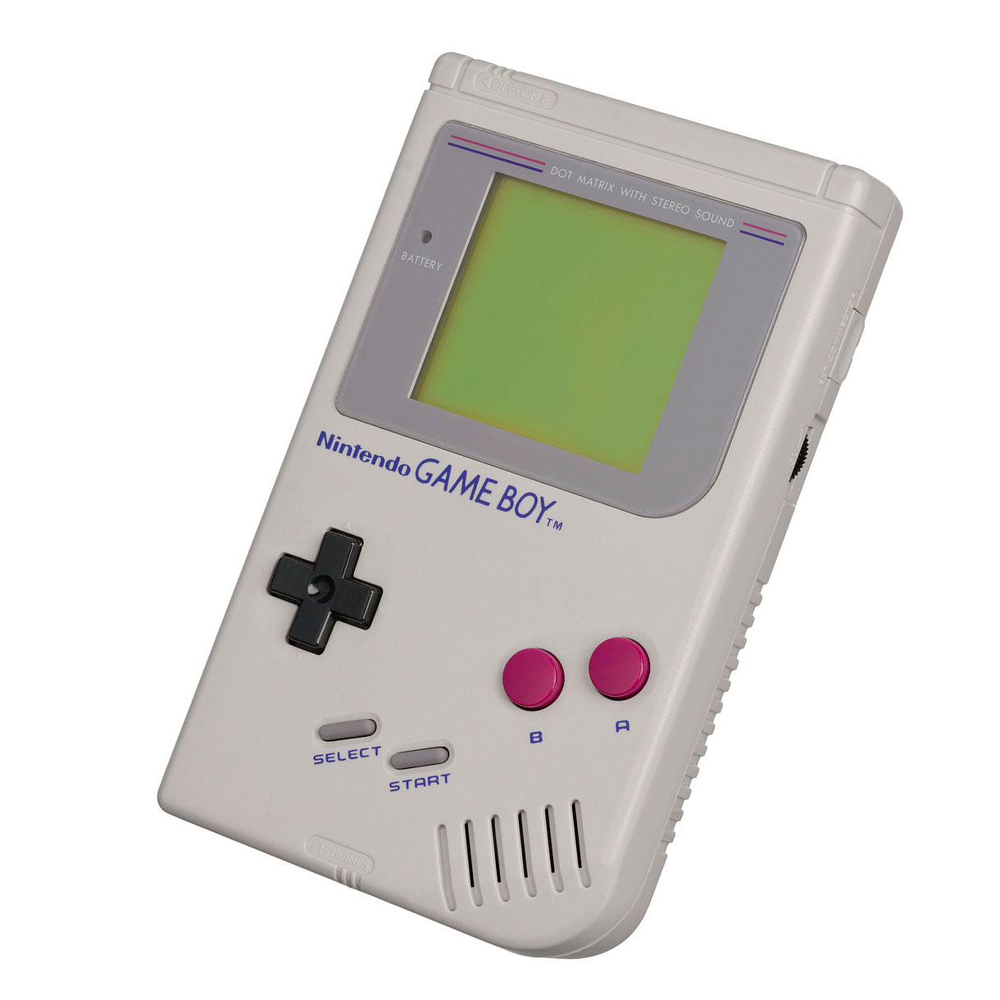

2015+
Nintendo NX
Nintendo's next step is to incorporate smartphone technology. They have begun this step by teaming up with Dena, a provider of mobile gaming platforms.

In 2006, the Nintendo DS Lite was released as a lighter more sleek redesign of the original Nitendo DS. The Nintendo DS Lite serves as a model for today's most recent iterations. The Nintendo DS Lite model has dual screens and a hinge that allows the system to open and close. Along with dual screens the Nintendo DS comes with a stylus allowing for touch capabilites.
The Nintendo 3DS was released in 2011. The main feature of the Nintendo 3DS is its 3D capability. Today in 2015, the 3DS is arguably Nintendo's most popuplar handheld system. The capability for wifi has allowed Nintendo to venture into the release of games through a digital platform. Most notably, the release of games that were created for the original Gameboy.
Nintendo's next step is to incorporate smartphone technology. They have begun this step by teaming up with Dena, a provider of mobile gaming platforms.